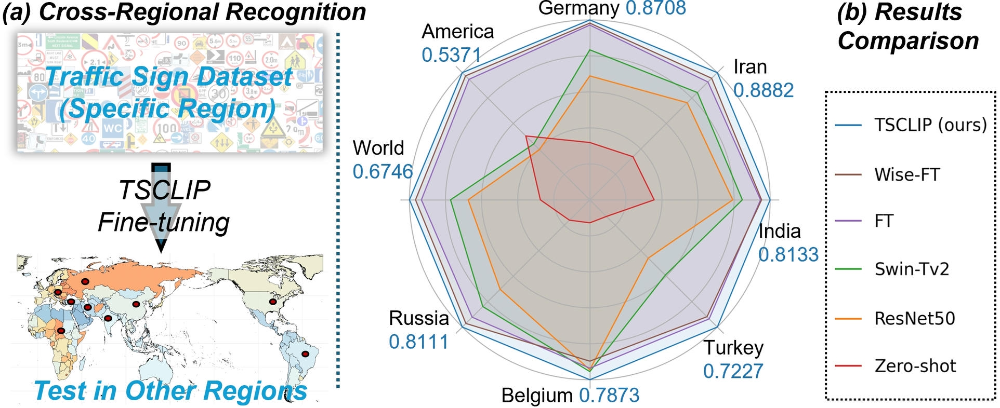
Traffic Sign Recognition in Autonomous Driving: Dataset, Benchmark, and Field Experiment
TS-1M Dataset & Benchmark
Download TS-1M
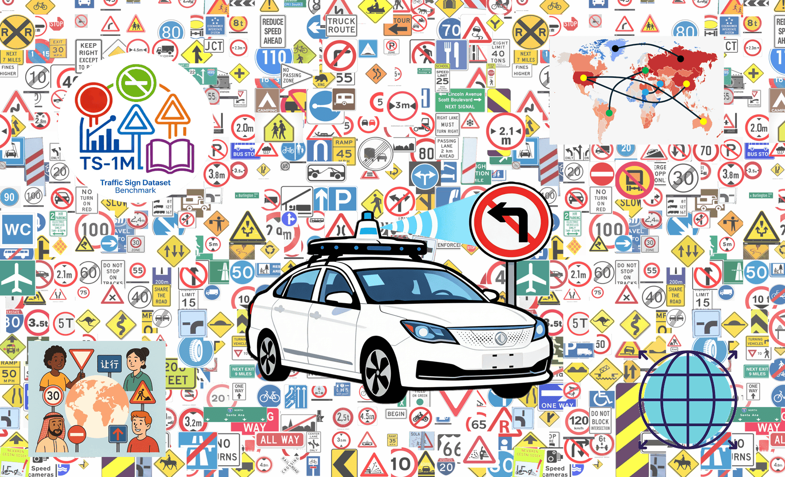

Traffic signs play a critical role in intelligent transportation systems and autonomous driving, providing essential cues for navigation, safety regulation, and environmental awareness. Although numerous recognition models have been proposed, existing benchmarks are typically limited in scale, geographic diversity, and category coverage, making it difficult to evaluate model robustness in real-world scenarios.
Current traffic sign datasets often suffer from regional bias, inconsistent labeling standards, and insufficient representation of rare or visually ambiguous signs. These limitations restrict the development and fair comparison of modern recognition models, especially for cross-region generalization and long-tail category understanding.
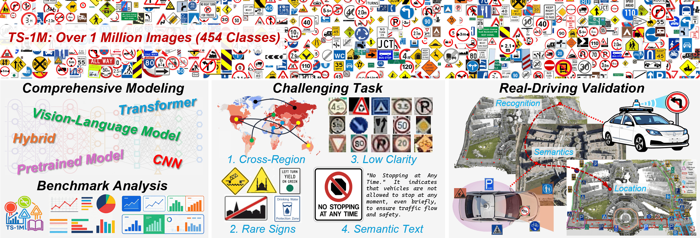
To address these challenges, we introduce TS-1M, a large-scale traffic sign dataset and benchmark designed for comprehensive evaluation of modern vision models. TS-1M contains over 1 million images across 454 categories, aggregated and standardized from diverse sources worldwide. Together with a unified evaluation benchmark spanning classical CNNs, self-supervised models, and vision-language models, TS-1M provides a diagnostic testbed for studying robustness, scalability, and generalization in traffic sign recognition.
TS-1M is constructed by consolidating public traffic sign datasets and additional web-collected samples into a unified large-scale corpus. During dataset construction, heterogeneous category systems are merged into a consistent taxonomy containing 454 classes. The raw data undergoes a multi-stage preprocessing pipeline including label normalization, duplicate removal, resolution filtering, and manual verification to eliminate annotation conflicts across datasets. This process results in a standardized dataset with consistent class definitions and reliable annotations suitable for large-scale benchmarking.
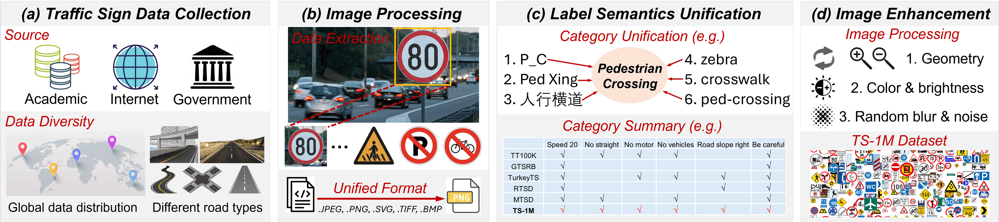
The final TS-1M dataset contains approximately 1.26 million images distributed across 454 categories, with an official split of about 1.06M training images and 200K test images. The dataset covers traffic signs from diverse geographic regions and road environments, including urban streets, highways, rural roads, and complex intersections. The class distribution follows a realistic long-tail pattern, where common regulatory signs contain thousands of samples while rare or region-specific signs appear only a few hundred times, enabling research on both large-scale recognition and long-tail learning.
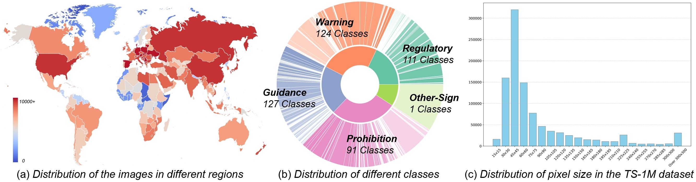
To support deeper analysis beyond standard classification accuracy, TS-1M provides several challenge-oriented evaluation subsets derived from the test set. These include a Cross-Region split for evaluating geographic generalization across countries, a Rare-Class subset focusing on low-frequency categories, and a Low-Clarity subset containing visually degraded samples affected by blur, occlusion, and distance. In addition, a Semantic Description subset associates traffic signs with textual descriptions of their meaning and regulations, enabling evaluation of vision-language models in traffic sign understanding tasks.
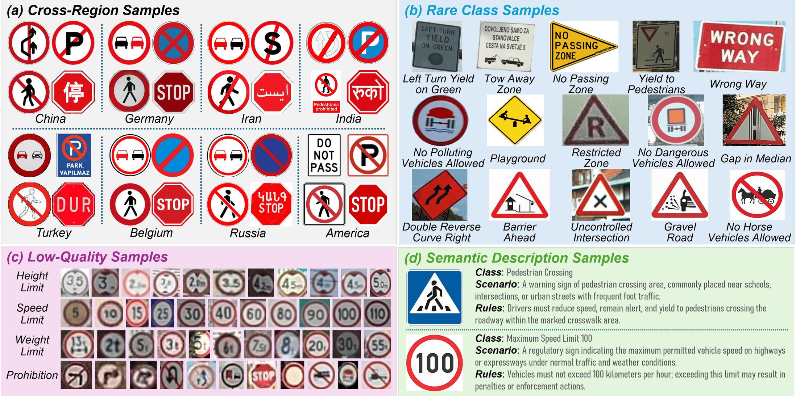
To provide a comprehensive evaluation on TS-1M, we benchmark a diverse set of representative models spanning multiple paradigms of visual recognition. The benchmark includes classical supervised architectures such as CNN and Transformer-based classifiers (e.g., ResNet and Swin Transformer), self-supervised representation learning models including DINO and DINOv2, and modern vision-language models such as CLIP and its fine-tuned variants. These models cover different learning paradigms and architectural designs, enabling systematic comparison of supervised learning, self-supervised pretraining, and multimodal representation learning on large-scale traffic sign recognition.
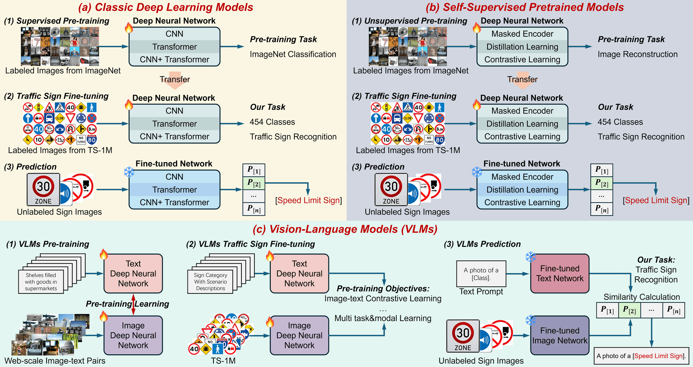
On the standard TS-1M test set, vision-language models achieve the best overall performance. Among all benchmarked methods, CLIP ranks first with 95.33% Acc.@1, clearly surpassing the best classical model ConvNeXt (94.28%) and also leading in Precision, Recall, and F1-score. Among purely visual architectures, modern CNNs such as ConvNeXt, ResNeXt50, and EfficientNetV2 remain strong baselines, while self-supervised models show mixed results, with SimMIM and MoCoV3 providing the most consistent gains.
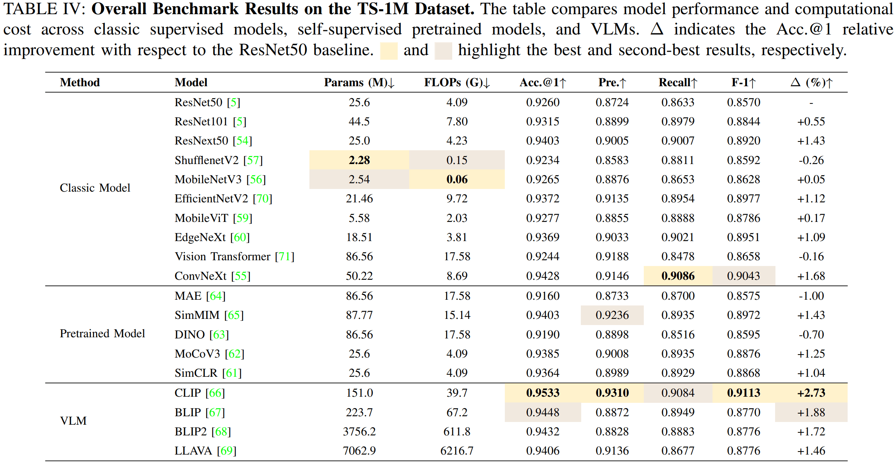
Cross-Region Recognition. Under cross-region evaluation on ten regional datasets, CLIP again delivers the strongest generalization with an average accuracy of 95.78%, outperforming the best classical baseline ConvNeXt (93.53%). Among visual-only models, ConvNeXt and ResNeXt50 are the most competitive, while SimMIM and MoCoV3 are the best-performing self-supervised methods. These results indicate that semantic alignment brings a clear advantage when traffic sign appearance varies across countries and regions.
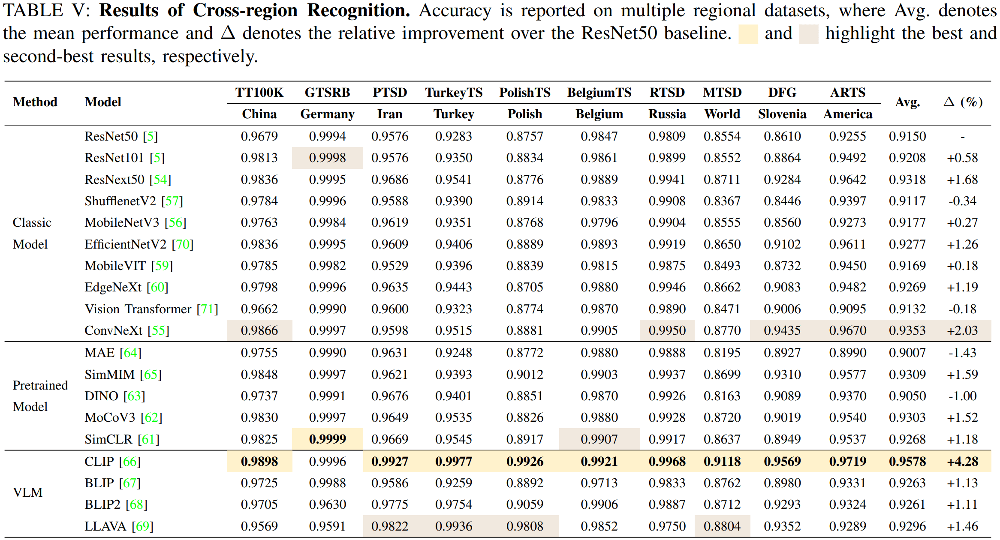
Rare-Class Recognition. On long-tailed subsets with fewer than 40 or 50 samples per class, CLIP shows the largest margin over all other methods, reaching 92.91% on Rare<40 and 92.56% on Rare<50. Among classical models, ConvNeXt performs best with 87.84% and 88.29%, while SimMIM is the strongest self-supervised model. The large performance gap suggests that multimodal semantic priors are particularly beneficial for recognizing rare and underrepresented traffic sign categories.
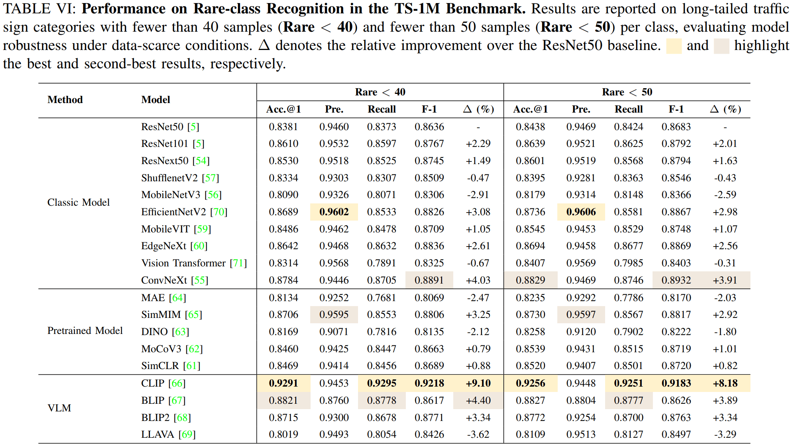
Robustness on Low-Clarity Signs. When evaluated on low-resolution and visually degraded samples, all models show a clear performance drop, confirming that low-clarity recognition remains a challenging problem. Even under this setting, CLIP still achieves the best result with 93.13% Acc.@1, followed by BLIP (91.75%) and ConvNeXt (90.88%). Compared with reconstruction-based SSL models such as MAE and DINO, stronger CNNs and multimodal models preserve much better robustness under blur, occlusion, and small-scale sign appearance.
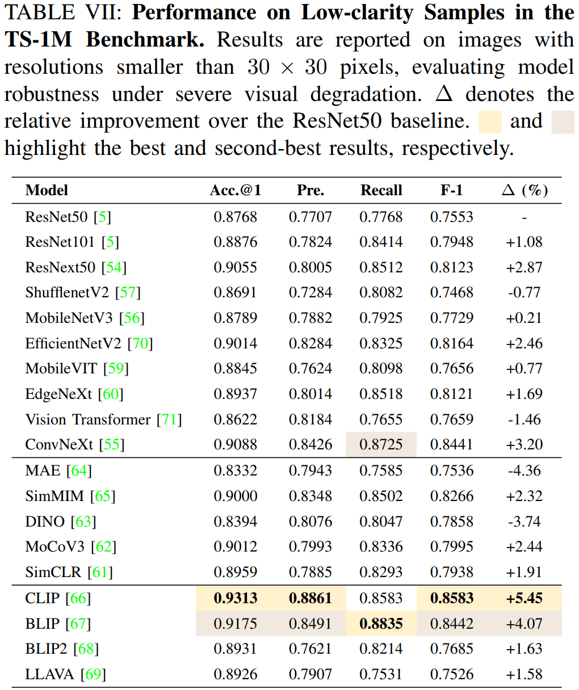
Effect of Semantic Enhancement. Semantic descriptions improve performance only when they are consistently incorporated during training. For zero-shot inference, adding scenario and rule descriptions brings modest gains, while for models fine-tuned without semantic descriptions, richer prompts at test time can even cause severe degradation due to prompt mismatch. In contrast, when trained with semantic descriptions, all VLMs benefit substantially, and LLaVA achieves the best overall result with 96.98% Acc.@1 and 93.37% F1-score, showing the strongest semantic reasoning capability among the evaluated models.
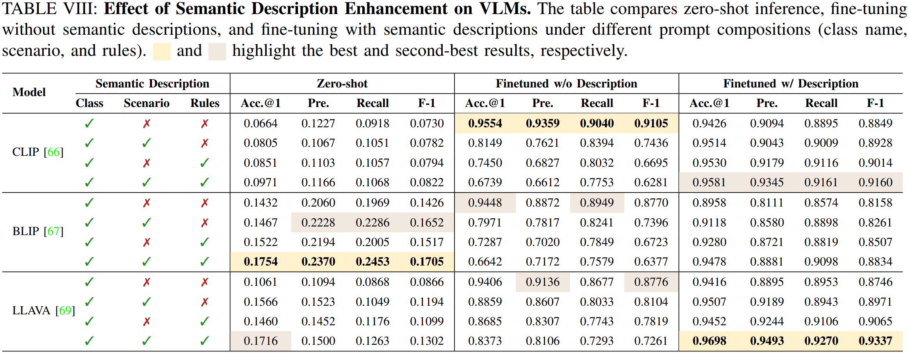
To examine the practical applicability of TS-1M in real autonomous driving systems, we conduct a real-world validation experiment. An autonomous test vehicle equipped with a 128-beam LiDAR and a surround-view camera system collects data along a 1.25 km route containing diverse road structures such as curved roads, intersections, roundabouts, and straight segments. While LiDAR is used to construct a high-definition point cloud map, the camera system performs traffic sign perception and recognition using models trained on TS-1M.
To enable scene-level semantic reasoning, a TS-1M fine-tuned CLIP model first performs traffic sign recognition, after which the detected sign and surrounding scene description are fed into the LLaVA model to infer driving rules through question-answer reasoning. The recognized signs are then registered into the LiDAR map together with their semantic constraints and precise 3D locations, forming a structured semantic traffic sign layer for autonomous driving maps. This experiment demonstrates how TS-1M can support real-world applications by bridging traffic sign perception, semantic understanding, and map-level integration.
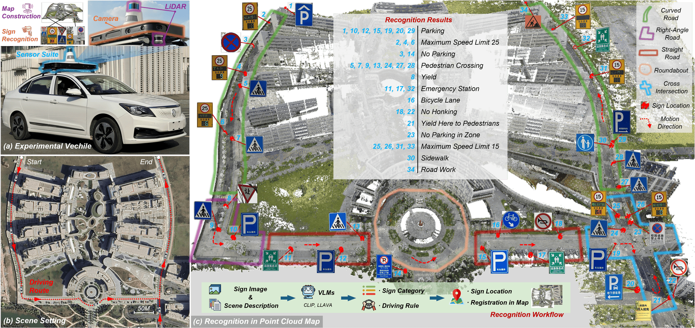